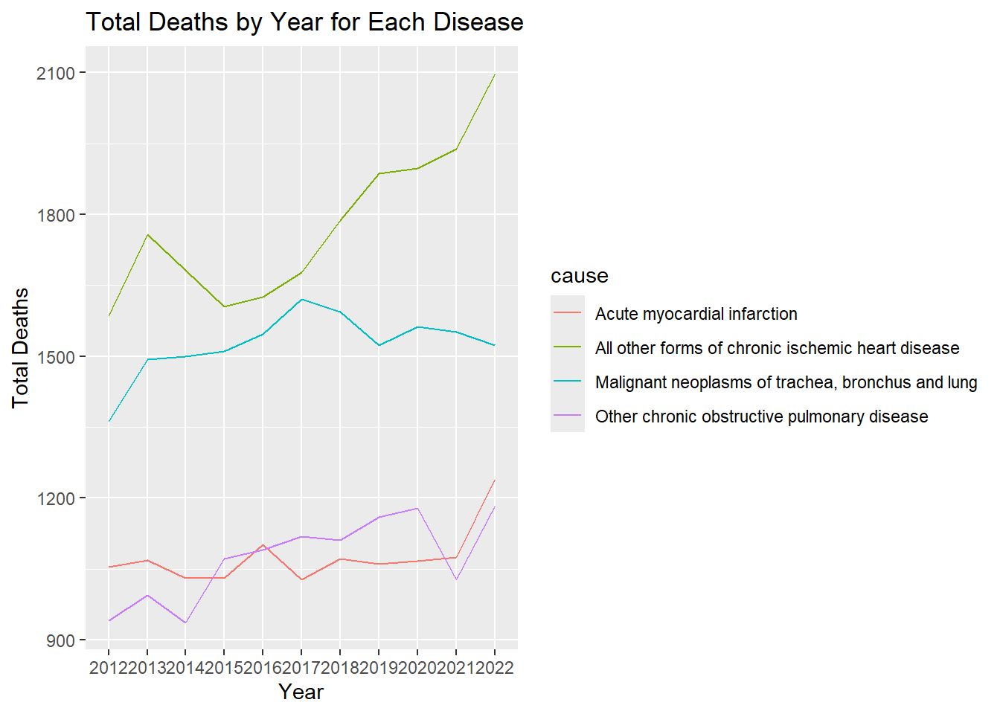
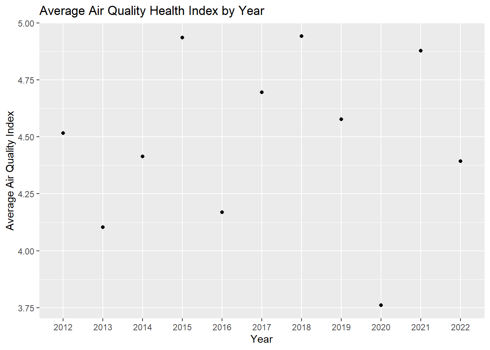
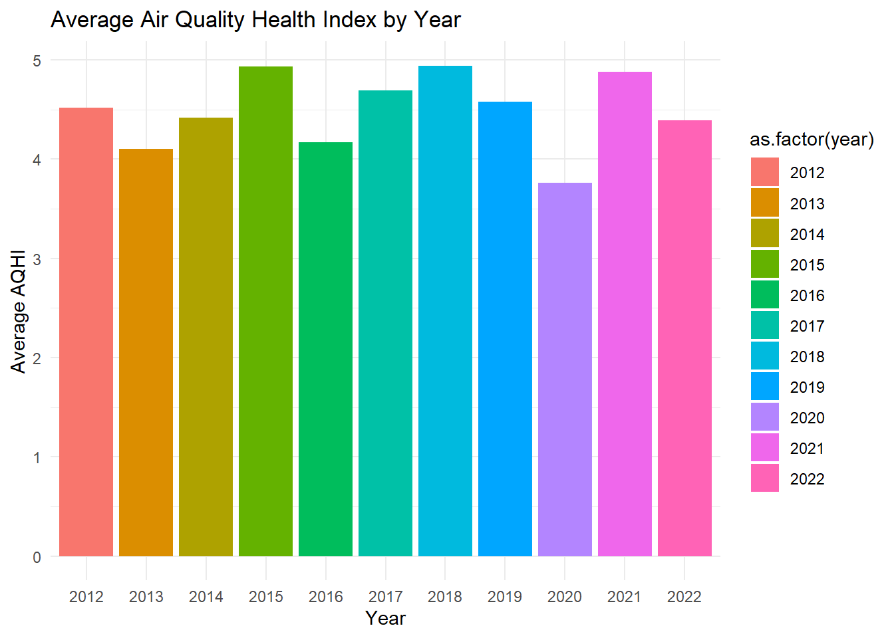
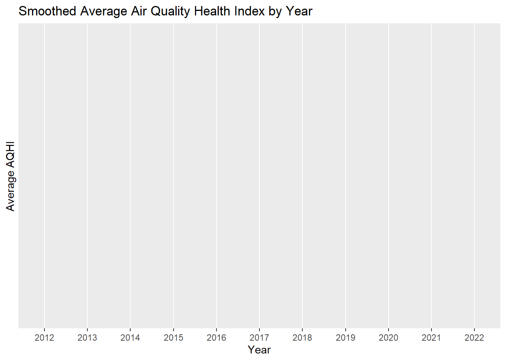
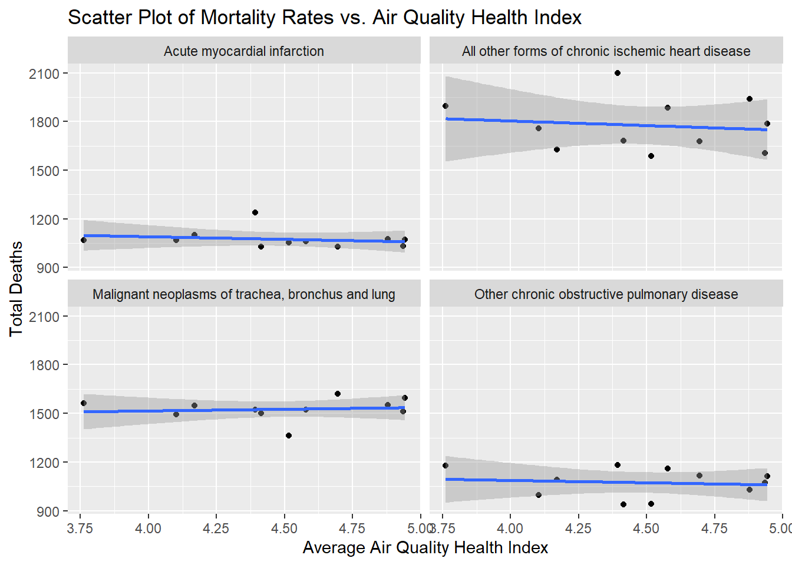
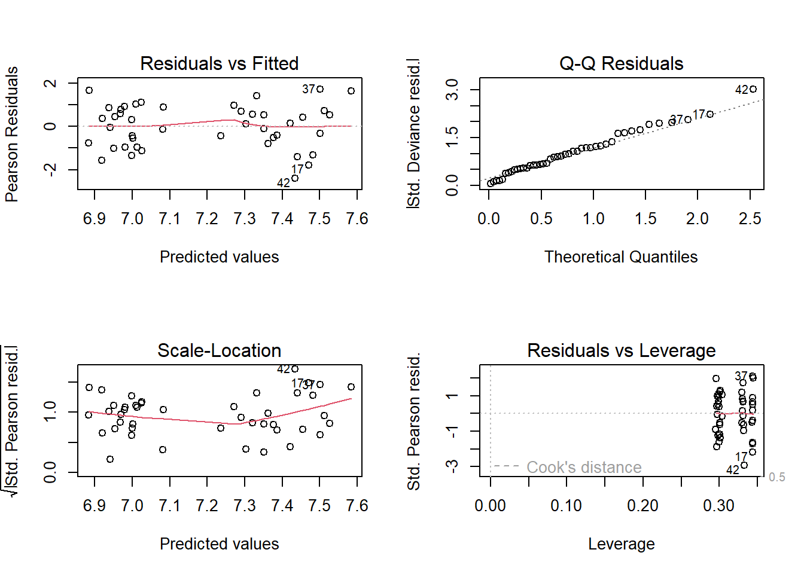
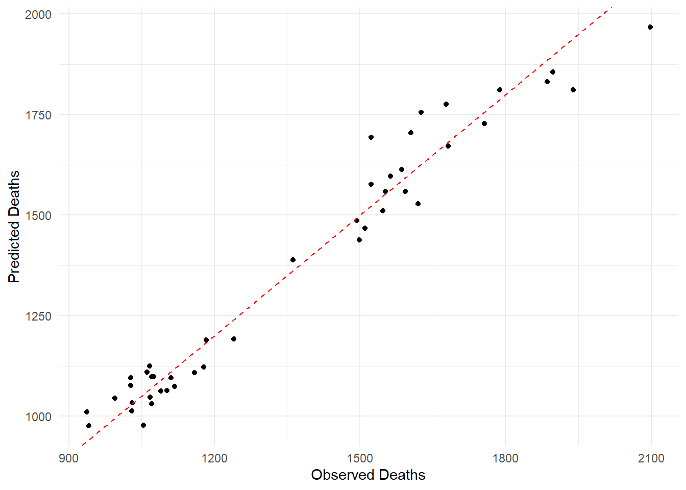
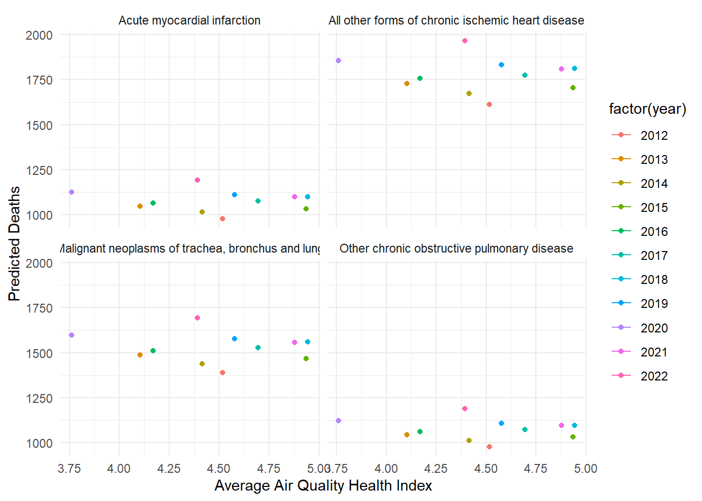
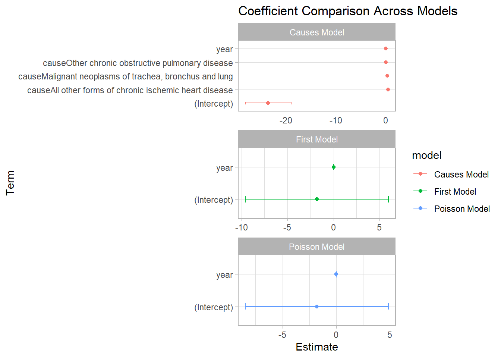

First sentence. Second sentence. Third sentence. Fourth sentence.
# Remove rows with "10+"air_quality_data <- air_quality_data[air_quality_data$air_quality_health_index !="10+",]air_quality_data$air_quality_health_index <-as.numeric(air_quality_data$air_quality_health_index)# Calculate the average Air Quality Health Index per yearaverage_aqi_by_year <- air_quality_data %>%group_by(year) %>%summarize(average_aqi =mean(air_quality_health_index))# Summarize total deaths for each disease by yeartotal_deaths_by_year <- deaths_data %>%group_by(year, cause) %>%summarize(total_deaths =sum(total_deaths))
`summarise()` has grouped output by 'year'. You can override using the
`.groups` argument.
# Plot for mortality dataggplot(total_deaths_by_year, aes(x =as.factor(year), y = total_deaths, group = cause, color = cause)) +geom_line() +labs(title ="Total Deaths by Year for Each Disease",x ="Year",y ="Total Deaths")

# Plot for air quality dataggplot(average_aqi_by_year, aes(x =as.factor(year), y = average_aqi)) +geom_line() +# for linesgeom_point() +# for pointslabs(title ="Average Air Quality Health Index by Year",x ="Year",y ="Average Air Quality Index")
`geom_line()`: Each group consists of only one observation.
ℹ Do you need to adjust the group aesthetic?

ggplot(average_aqi_by_year, aes(x =as.factor(year), y = average_aqi, fill =as.factor(year))) +geom_bar(stat ="identity") +labs(title ="Average Air Quality Health Index by Year",x ="Year",y ="Average AQHI") +theme_minimal()

ggplot(average_aqi_by_year, aes(x =as.factor(year), y = average_aqi)) +geom_smooth(method ="loess", span =0.5) +labs(title ="Smoothed Average Air Quality Health Index by Year",x ="Year",y ="Average AQHI")
`geom_smooth()` using formula = 'y ~ x'

# Merge datasets on 'year'combined_data <-merge(deaths_data, average_aqi_by_year, by ="year")# Plot scatter plot of mortality rates vs. air quality health indexggplot(combined_data, aes(x = average_aqi, y = total_deaths)) +geom_point() +geom_smooth(method ="lm") +facet_wrap(~cause) +labs(title ="Scatter Plot of Mortality Rates vs. Air Quality Health Index",x ="Average Air Quality Health Index",y ="Total Deaths")
`geom_smooth()` using formula = 'y ~ x'

# Fit a Negative Binomial Model to the combined data# Assuming the glm.nb() function is appropriate for your count data# Load the MASS package for glm.nblibrary(MASS)
Attaching package: 'MASS'
The following object is masked from 'package:dplyr':
select
# Fit the modelmodel <-glm.nb(total_deaths ~ average_aqi +factor(year) +factor(cause), data = combined_data)# Model Diagnosticspar(mfrow=c(2,2))plot(model)

# Add Predictions to the combined data# Note: predict() function might throw an error if there are new factor levels in the test set that were not present in the training set# To prevent this, the newdata argument should only include levels that were present in the model fittingcombined_data$predicted_deaths <-predict(model, newdata = combined_data, type ="response")# Plot Observed vs. Predicted Deathsggplot(combined_data, aes(x = total_deaths, y = predicted_deaths)) +geom_point() +geom_abline(intercept =0, slope =1, linetype ="dashed", color ="red") +labs(x ="Observed Deaths", y ="Predicted Deaths") +theme_minimal()

# Effect of AQHI on Predicted Deathsggplot(combined_data, aes(x = average_aqi, y = predicted_deaths, color =factor(year))) +geom_point() +geom_line(aes(group =factor(year))) +# Adding lines to connect points by yearlabs(x ="Average Air Quality Health Index", y ="Predicted Deaths") +theme_minimal() +facet_wrap(~cause)
`geom_line()`: Each group consists of only one observation.
ℹ Do you need to adjust the group aesthetic?
`geom_line()`: Each group consists of only one observation.
ℹ Do you need to adjust the group aesthetic?
`geom_line()`: Each group consists of only one observation.
ℹ Do you need to adjust the group aesthetic?
`geom_line()`: Each group consists of only one observation.
ℹ Do you need to adjust the group aesthetic?

1 Introduction
You can and should cross-reference sections and sub-sections. We use R Core Team (2023) and Wickham et al. (2019).
The remainder of this paper is structured as follows. Section 2….
2 Data
Talk way more about it.
3 Model
The goal of our modelling strategy is twofold. Firstly,…
Here we briefly describe the Bayesian analysis model used to investigate… Background details and diagnostics are included in Appendix 7.
3.1 Model set-up
Define \(y_i\) as the number of seconds that the plane remained aloft. Then \(\beta_i\) is the wing width and \(\gamma_i\) is the wing length, both measured in millimeters.
Table 1: Explanatory models of flight time based on wing width and wing length
First model
(Intercept)
−1.82
(7.77)
year
0.00
(0.00)
Num.Obs.
2127
AIC
9742.4
BIC
9759.4
Log.Lik.
−4868.184
RMSE
2.44
First model
(Intercept)
−1.81
(6.65)
year
0.00
(0.00)
Num.Obs.
2127
AIC
9838.1
BIC
9849.4
Log.Lik.
−4917.046
RMSE
2.44
First model
(Intercept)
−23.59
(4.60)
year
0.02
(0.00)
causeAll other forms of chronic ischemic heart disease
0.50
(0.02)
causeMalignant neoplasms of trachea, bronchus and lung
0.35
(0.02)
causeOther chronic obstructive pulmonary disease
0.00
(0.02)
Num.Obs.
44
AIC
502.0
BIC
512.7
Log.Lik.
−244.986
RMSE
67.06
library(broom)library(ggplot2)# Tidy the model coefficientsfirst_model_tidy <-tidy(first_model) %>%mutate(model ="First Model")poisson_model_tidy <-tidy(poisson_model) %>%mutate(model ="Poisson Model")causes_model_tidy <-tidy(causes_model) %>%mutate(model ="Causes Model")# Combine the coefficients into one data-framecombined_coeffs <-bind_rows(first_model_tidy, poisson_model_tidy, causes_model_tidy)# Create the coefficient comparison plotggplot(combined_coeffs, aes(x = term, y = estimate, color = model)) +geom_point() +geom_errorbar(aes(ymin = estimate - std.error, ymax = estimate + std.error), width =0.2) +facet_wrap(~ model, scales ="free", ncol =1) +coord_flip() +theme_light() +labs(title ="Coefficient Comparison Across Models",x ="Term",y ="Estimate")

library(plotly)
Warning: package 'plotly' was built under R version 4.3.3
Attaching package: 'plotly'
The following object is masked from 'package:MASS':
select
The following object is masked from 'package:ggplot2':
last_plot
The following object is masked from 'package:stats':
filter
The following object is masked from 'package:graphics':
layout
# Assuming your data frame is named 'data_filtered' and is already filtered and renamed.# Convert factors to character to avoid plotly warningscleaned_avg_PM25_conc[] <-lapply(cleaned_avg_PM25_conc, function(x) if(is.factor(x)) as.character(x) else x)# Making the plot interactive using plotly# Make sure to use the exact column names from your data framep <-plot_ly(data = cleaned_avg_PM25_conc, x =~years) %>%add_lines(y =~provincial_average, name ='Provincial Average', hoverinfo ='y+name') %>%add_lines(y =~x10th_percentile, name ='10th Percentile', hoverinfo ='y+name') %>%add_lines(y =~x90th_percentile, name ='90th Percentile', hoverinfo ='y+name') %>%layout(title ="Annual Trends of PM2.5 Concentrations in Alberta: Provincial Averages and Percentile Ranges (2012-2021)",xaxis =list(title ="Years"), yaxis =list(title ="PM2.5 Concentration (μg/m³)"))# Additional customization for interactive behavior can be added here# Finally, displaying the plotp
5 Discussion
5.1 First discussion point
If my paper were 10 pages, then should be be at least 2.5 pages. The discussion is a chance to show off what you know and what you learnt from all this.
5.2 Second discussion point
5.3 Third discussion point
5.4 Weaknesses and next steps
Weaknesses and next steps should also be included.
Appendix
6 Additional data details
7 Model details
7.1 Posterior predictive check
In ?@fig-ppcheckandposteriorvsprior-1 we implement a posterior predictive check. This shows…
In ?@fig-ppcheckandposteriorvsprior-2 we compare the posterior with the prior. This shows…
7.2 Diagnostics
?@fig-stanareyouokay-1 is a trace plot. It shows… This suggests…
?@fig-stanareyouokay-2 is a Rhat plot. It shows… This suggests…
8 References
Goodrich, Ben, Jonah Gabry, Imad Ali, and Sam Brilleman. 2022. “Rstanarm: Bayesian Applied Regression Modeling via Stan.”https://mc-stan.org/rstanarm/.
R Core Team. 2023. R: A Language and Environment for Statistical Computing. Vienna, Austria: R Foundation for Statistical Computing. https://www.R-project.org/.
Wickham, Hadley, Mara Averick, Jennifer Bryan, Winston Chang, Lucy D’Agostino McGowan, Romain François, Garrett Grolemund, et al. 2019. “Welcome to the tidyverse.”Journal of Open Source Software 4 (43): 1686. https://doi.org/10.21105/joss.01686.